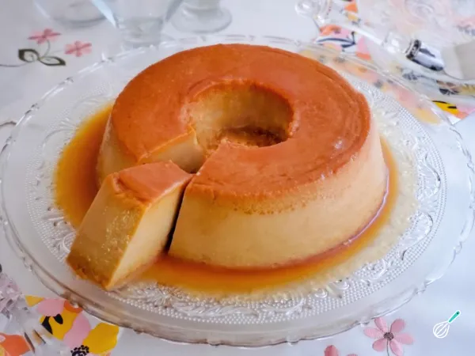

Receita de Flan de doce de leite
O pudim é uma sobremesa mundialmente famosa, e recebe diversos nomes dependendo da região. É uma sobremesa de origem francesa que consiste num creme denso e ao mesmo tempo macio, envolto em caramelo líquido e cozido em banho-maria. Vamos te ensinar como fazer um flan caseiro simples e prático, essa receita é cremosa e surpreendente!
Confira todos os detalhes dessa receita no nosso passo a passo com fotos e aprenda como fazer flan de doce de leite!